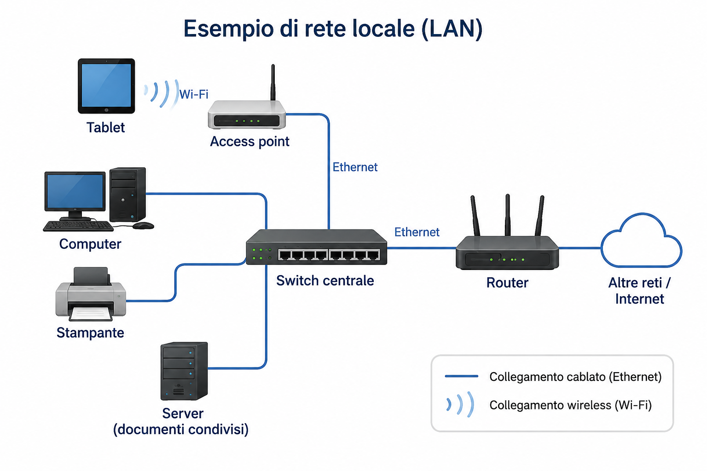

Dispositivi che comunicano
Computer, tablet, stampante e computer con documenti condivisi.
Lezione 10 · Durata prevista: 2 ore
In una casa o in un'aula, come possono computer, tablet e una stampante condivisa comunicare e usare risorse comuni?
Nella lezione precedente abbiamo seguito lo scambio di dati tra un computer e le sue periferiche. Tastiera, monitor e stampante possono inviare o ricevere dati secondo la funzione svolta.
Ora allarghiamo lo sguardo: in una casa o in un'aula ci sono spesso più computer, tablet e dispositivi che devono collaborare e usare risorse comuni.
Immagina un'aula con sei computer fissi, due tablet, una stampante e un computer che contiene documenti per la classe. I computer fissi usano collegamenti via cavo; i tablet comunicano senza cavo. Tutti devono poter inviare un documento alla stampante e consultare i file messi a disposizione.
Computer, tablet, stampante e computer con documenti condivisi.
La stampante e i documenti autorizzati per la condivisione.
Questa organizzazione permette di svolgere attività comuni senza spostare fisicamente ogni file da un dispositivo all'altro.
Insieme di dispositivi collegati che possono comunicare, scambiare dati e condividere risorse secondo regole stabilite.
Una rete può essere realizzata per:
Sono i dispositivi collegati alla rete, per esempio computer, tablet, stampanti e dispositivi di rete.
Permettono ai dati di viaggiare tra i nodi. Possono usare cavi oppure comunicazioni wireless.
Sono dispositivi, documenti o servizi resi disponibili ad altri nodi autorizzati della rete.
Appartenere alla stessa rete non rende automaticamente accessibili tutti i file. Una risorsa deve essere condivisa e l'accesso deve essere consentito.
Usa un cavo per collegare il dispositivo alla rete. In una rete locale è comune l'uso di Ethernet.
Permette di comunicare senza cavo. Il Wi-Fi è una tecnologia usata per collegarsi a una rete locale wireless.
Una stessa rete locale può comprendere sia dispositivi cablati sia dispositivi wireless. Ethernet non significa Internet e Wi-Fi non significa Internet: descrivono modalità di collegamento alla rete.
Local Area Network: rete locale che collega dispositivi in un'area limitata, come una casa, un laboratorio o un edificio.
Wide Area Network: rete geografica che collega reti o dispositivi su aree molto più estese.
La distinzione riguarda soprattutto l'estensione della rete. Una LAN non deve usare soltanto cavi: può comprendere anche collegamenti Wi-Fi.
Collega più dispositivi cablati nella stessa rete locale e aiuta a indirizzare le comunicazioni verso il collegamento corretto.
Permette ai dispositivi wireless di collegarsi alla rete locale e comunicare con i dispositivi cablati.
Collega reti differenti e permette il passaggio dei dati tra esse. Può collegare la rete locale verso l'esterno.
Quando necessario, un modem rende possibile il collegamento attraverso la linea fornita dal servizio di comunicazione. Nelle apparecchiature domestiche può essere integrato insieme al router.
L’immagine rappresenta una LAN semplificata. Le linee blu indicano i collegamenti cablati Ethernet; il simbolo Wi-Fi indica il collegamento wireless tra il tablet e l’access point.

Computer, tablet, stampante e server sono nodi della stessa rete locale. Lo switch e l'access point permettono loro di comunicare; il router collega la LAN ad altre reti. Anche senza accesso a Internet, i nodi possono continuare a usare le risorse locali autorizzate.
Dispositivo o programma che richiede una risorsa o un servizio.
Dispositivo o programma che mette a disposizione una risorsa o un servizio.
Client e server sono ruoli, non necessariamente tipi diversi di computer. Un normale computer può offrire documenti alla classe e svolgere il ruolo di server; un altro computer che richiede un documento svolge il ruolo di client. Un server non è quindi sempre un computer enorme.
Il computer invia il documento attraverso il collegamento cablato allo switch; lo switch permette ai dati di raggiungere la stampante condivisa, che produce la stampa.
Il client richiede un file; la richiesta raggiunge il server nella rete locale; se l'accesso è consentito, il server rende disponibile il documento richiesto.
Il tablet comunica via Wi-Fi con l'access point; l'access point è collegato alla parte cablata della LAN e permette la comunicazione con il computer autorizzato.
Collega dispositivi in un'area limitata e può offrire risorse locali anche senza collegamento esterno.
È una rete globale che collega moltissime reti e dispositivi.
È uno dei servizi che utilizza Internet; non è Internet stesso.
Rete, Internet e Web non sono sinonimi. In questa lezione ci fermiamo alla distinzione essenziale; Internet e Web saranno approfonditi nella Lezione 11.
No. Il Wi-Fi collega dispositivi a una rete senza cavo; Internet è una rete globale.
No. Una LAN può scambiare dati e condividere risorse locali senza Internet.
No. Il router è un dispositivo che collega reti differenti.
No. Lo switch collega nodi nella LAN; il router collega reti differenti.
No. Può comprendere collegamenti cablati e wireless.
No. Devono essere messi a disposizione e l'accesso deve essere consentito.
No. Server indica un ruolo: offrire una risorsa o un servizio.
No. Il Web è uno dei servizi che utilizza Internet.
Scenario: sei computer fissi, due tablet, una stampante di rete, un computer o server con documenti condivisi, uno switch, un access point e un router.
Individua tutti i dispositivi presenti nello scenario.
Separa dispositivi finali, dispositivi di rete e risorse da condividere.
Collega i computer fissi via cavo e i tablet via Wi-Fi. Indica chiaramente switch e access point.
Usa riquadri per i nodi, linee o frecce per i collegamenti ed etichette “cablato” e “wireless”.
Descrivi il percorso dei dati da un computer alla stampante.
Descrivi il percorso dal tablet wireless al computer o server che offre il documento condiviso.
Indica quali attività locali potrebbero continuare e motiva la risposta.
In due minuti spiega nodi, collegamenti, dispositivi di rete e due percorsi dei dati.
In una rete con tre computer e una stampante, indica nodi, collegamenti e risorsa condivisa.
Classifica: computer collegato allo switch con cavo; tablet collegato all'access point; stampante collegata via cavo.
Classifica una rete di laboratorio e una rete che collega sedi in città differenti. Motiva la scelta usando l'estensione.
Associa switch, access point e router a: collega nodi cablati nella LAN; collega dispositivi wireless; collega reti differenti.
Un computer richiede un documento e un altro lo mette a disposizione. Indica i due ruoli e spiega perché possono cambiare.
Tablet → ______ → switch → ______ condivisa. Inserisci i dispositivi adatti e descrivi il percorso a voce.
Riscrivi correttamente: “Se manca Internet, la rete locale non può fare nulla” e “Wi-Fi significa Internet”.
Spiega in due minuti che cos'è una LAN usando i termini nodo, collegamento, risorsa, switch e access point.
Lo switch collega i nodi cablati della LAN; l'access point collega i dispositivi wireless; il router collega reti differenti. Cavo ed Ethernet indicano un collegamento cablato, mentre il Wi-Fi permette un collegamento wireless.
La LAN copre un'area limitata; la WAN un'area molto più estesa. Il client richiede una risorsa e il server la mette a disposizione: sono ruoli che dipendono dall'attività svolta.
Una rete locale può funzionare senza Internet. Internet è una rete globale; il Web è uno dei servizi che usa Internet.
Formula prima una risposta a voce. Apri la spiegazione soltanto dopo.
È un insieme di dispositivi collegati che possono comunicare, scambiare dati e condividere risorse.
Un nodo è un dispositivo collegato; una risorsa condivisa è un dispositivo, documento o servizio reso disponibile ai nodi autorizzati.
Il primo usa un cavo; il secondo permette la comunicazione senza cavo.
La LAN copre un'area limitata; la WAN un'area molto più estesa.
Lo switch collega nodi cablati nella LAN, l'access point collega dispositivi wireless e il router collega reti differenti.
Perché descrivono chi richiede e chi offre una risorsa; non identificano necessariamente tipi differenti di computer.
Sì. Può continuare a scambiare dati e usare risorse locali.
No. Internet è una rete globale; il Web è un servizio che la utilizza.
Il tablet comunica via Wi-Fi con l'access point; attraverso la LAN e lo switch, i dati raggiungono la stampante cablata condivisa.
Sintesi essenziale
Se domani dimenticassi quasi tutto, queste sono le idee che dovresti riuscire a ricostruire.
Allenamento distribuito
Prova prima senza rileggere, poi controlla e correggi.
Individua nodi, collegamenti e risorse in una rete vicina.
Confronta cablato e wireless, LAN e WAN, client e server.
Correggi a voce quattro errori frequenti della lezione.
Presenta in tre minuti lo schema di una piccola LAN.